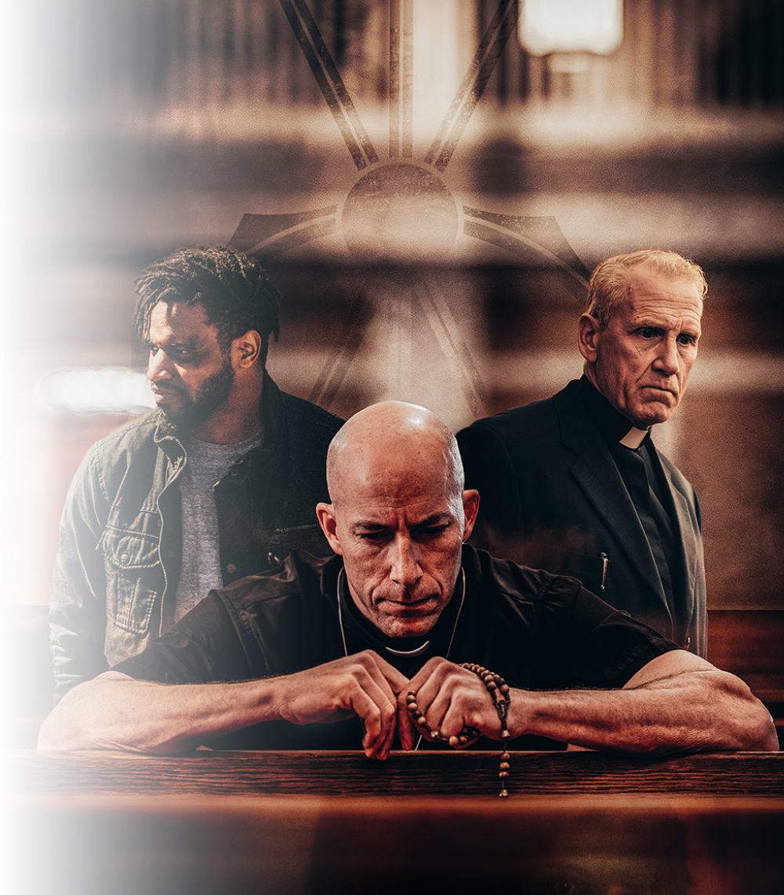
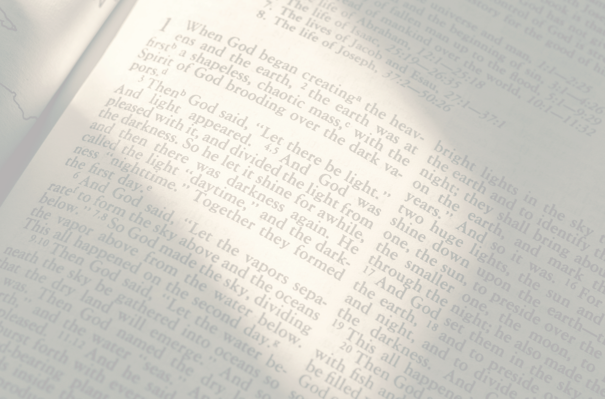
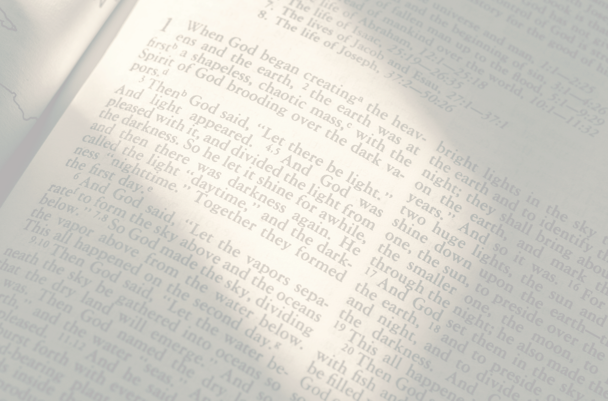

A priest and a private investigator who share a complicated past reconnect to solve the
disappearance of a teenage girl, uncovering a sadistic cult with far-reaching influence.

Story by Jennifer Andrews, Jason Wright, & Sean Berube
A priest and a private investigator who share a complicated past reconnect to solve the
disappearance of a teenage girl, uncovering a sadistic cult with far-reaching influence.
Story by Jennifer Andrews, Jason Wright, & Sean Berube
 

Ezra King is a military veteran who, after a tragic mistake in Afghanistan, has turned to a quiet life of service as a Catholic priest. When one of his teenage parishioners goes missing, he feels compelled to help her and her family, leading him to reconnect with Logan Dubois, who served alongside him. Logan was like a brother to Ezra, but his involvement in the mistake that caused Ezra to leave the military leads to lingering resentments. Logan has since become a private investigator and family man, although unlike Ezra, a quiet life does not appeal to him. What appears at first to be a simple disappearance uncovers a sadistic cult with influence that reaches far beyond what Ezra and Logan could have imagined.
THE
PREMISE